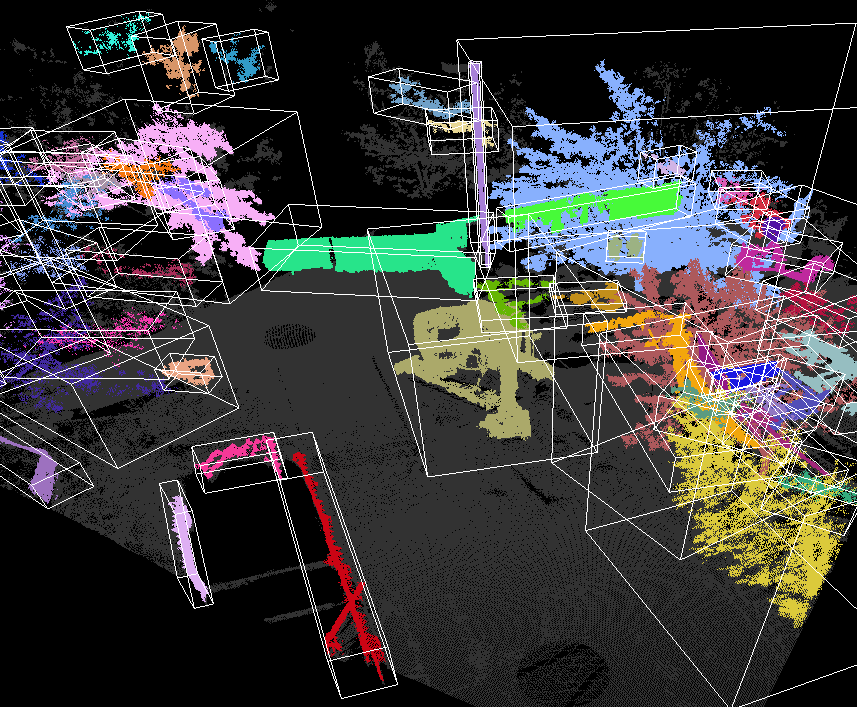

Automation & Robotics

-
Chen, J., Fang, Y., Cho, Y., Kim, C. (2016). "Principal Axes Descriptor (PAD) for Automated Construction Equipment Classification from Point Clouds." ASCE's Journal of Computing in Civil Engineering, Volume 31, Issue 2, March 2017, doi.org/10.1061/(ASCE)CP.1943-5487.0000628 [Full text]
- Cho, Y. and Gai. M. (2014). “Projection-Recognition-Projection Method for Automatic Object Recognition and Registration for Dynamic Heavy Equipment Operations.” a special issue of ASCE Journal of Computing in Civil Engineering, Volume 28, Issue 5, September 2014, (invited from 2012 ASCE International Workshop on Computing in Civil Engineering in Clearwater Beach, FL) DOI: 10.1061/(ASCE) CP.1943-5487.0000332 [Full text]
-
Chen, J., Fang, Y., and Cho, Y. (2016). “Automated Equipment Recognition and Classification from Scattered Point Clouds for Construction Management. ” International Symposium on Automation and Robotics in Construction (ISARC), Auburn, AL, July 18-21, 2016, DOI: 10.22260/ISARC2016/0027 [Full text]
Heavy construction equipment operation requires processing of thousands of range data in real-time or near real-time about the surrounding work environment, which is difficult to achieve with the current sensor technologies. Material handling such as steel beam erection and bolting requires not only rapid visualization of workspace but highly accurate position data for safe and secure physical contact between a target object and an end-effector. To meet these challenges, a target-focused range data collection and modeling method has been developed through a hybrid approach which integrates a 3D laser scanner with other optical sensors. The hybrid system will significantly reduce data collection time while enhancing data accuracy as well as promoting a target feature extraction process from the background range data. Automatic target detection and fitting and matching algorithms have been developed for rapid model-based graphical registration for various shapes of construction equipment and materials. Properly engineered, this new hybrid method for rapid 3D graphical recognition and registration of objects will become an important component for developing more intelligent and automated construction job sites by providing a fully sensed, monitored environment for materials, equipment, and operator.
Automated Target Recognition & Registration
Safe construction and operation of heavy construction equipment such as cranes, excavators, concrete pump trucks has been considered a very important subject in construction field. It would be helpful for the operators if the accurate 3D position of the target objects and surroundings are readily available. It has been a challenging subject to recognize target objects from a scattered work environment because large and complex 3D site data obtained by a laser scanner makes it difficult to process itself in real or near real time. In this study, A target is automatically recognized and tracked through a video camera. To reduce data size and scanning time, only recognized target in a box (i.e., kernel) will be scanned. Our hybrid system consistes of a CCD camera and laser scanner were used to rapidly recognize and register dynamic target objects in a 3D space by separating target object’s point cloud data from other background point cloud data for quick process.
-
Wang, C and Cho, Y.( 2014). “Smart Scanning and Near Real-Time 3D Surface Modeling of Dynamic Construction Equipment from A Point Cloud.” Automation in Construction, Volume 49, Part B, January 2015, Pages 239-249, DOI: 10.1016/j.autcon.2014.06.003 (selected as best paper and invited from the 2013 30th International Symposium on Automation and Robotics in Construction (ISARC) in Montreal, Canada) [Fll text]
-
Cho, Y. and Gai. M. (2014). “Projection-Recognition-Projection Method for Automatic Object Recognition and Registration for Dynamic Heavy Equipment Operations.” a special issue of ASCE Journal of Computing in Civil Engineering, Volume 28, Issue 5, September 2014, (invited from 2012 ASCE International Workshop on Computing in Civil Engineering in Clearwater Beach, FL) DOI: 10.1061/(ASCE) CP.1943-5487.0000332 [Full text]
-
Cho, Y., Wang, C., Tang, P., and Haas, C.(2012). "Target-focused Local Workspace Modeling for Construction Automation Applications." ASCE Journal of Computing in Civil Engineering, Volume 26, Issue 5, September 2012, Pages 661-670, DOI: 10.1061/(ASCE)CP.1943-5487.0000166 [Fulltext]
-
Wang, C., Cho, Y., and Park, J. (2014). “Performance Tests for Automatic Geometric Data Registration Technique for Construction Progress Monitoring.” International Conference on Computing in Civil and Building Engineering (ICCCBE), ASCE, Jun. 23-25, Orlando, FL. pp. 1053-106, DOI: 10.1061/9780784413616.131 [Full text]
-
Cho, Y., Wang, C., Gai, M., and Park, J. (2014). “Rapid Dynamic Target Surface Modeling for Crane Operation Using Hybrid LADAR System” Construction Research Congress (CRC), ASCE, May 19-21, Atlanta, GA, DOI: 10.1061/9780784413517.108 [Full text]
-
Gai, M. and Cho, Y. (2013). “Automatic object recognition of dyanmic construction equipment from a 3D point cloud.” the 30th International Symposium on Automation and Robotics in Construction (ISARC), August 11-15, Montréal, Canada, DOI: 10.22260/ISARC2013/0061 [Full text]
-
Gai, M., Cho, Y., and Qinghua, X. (2013). “Real-time 3D visualization of multiple heavy construction equipment operations using LADAR.” Proceedings of the 2013 ASCE International Workshop on Computing in Civil Engineering, June 23-25, Univ. of Southern California, LA, California. pp.889-896, DOI: 10.1061/9780784413029.111 [Full text]
-
Gai, M., Cho, Y., and Qinghua, X. (2013). “Target-free automatic point clouds registration using 2D images.” Proceedings of the 2013 ASCE International Workshop on Computing in Civil Engineering, June 23-25, Univ. of Southern California, LA, California. pp.865-872, DOI: 10.1061/9780784413029.108 [Full text]
-
Gai, M., Cho, Y., and Wang, C. (2012). “Projection-Recognition-Projection (PRP) Method for Rapid Object Recognition from a 3D point cloud." Proceedings of the 2012 ASCE International Workshop on Computing in Civil Engineering, June 17-20, Clearwater, FL, pp. 325-332, DOI: 10.1061/9780784412343.0041 [Full text]
Monitoring and controlling the position of the load is important to avoid struck-by accidents caused by crane load, especially in blind lifts. However, a reliable approach to position the load and monitor the load sway remains missing. This study proposes an orientation-based approach for tracking crane load position and monitoring load sway in daily lifting activities. This approach adopts an off-the-shelf inertial measurement unit (IMU) module for measuring load orientation, and an efficient algorithm for converting orientation measurements to load positions. Test results indicate that the proposed approach correctly converted orientation measurements to accurate load positions and reconstructed the load sway trajectory in both linear and circular sway motions. Enabling continuously monitoring of crane load motion, this approach augments the crane motion information obtained by typical crane motion capturing systems. This video shows the invited presentation in the Graduate Student Demonstration in the 2015 ASCE International Workshop on Computing in Civil Engineering in Austin, Texas.
Monitoring crane motion in real time is the first step to identifying and mitigating crane-related hazards on construction sites. However, no accurate and reliable crane motion capturing technique is available to serve this purpose. The objective of this research is to explore a method for real-time crane motion capturing and investigate an approach for assisting hazard detection. A prototype system was developed and deployed on a 70 ton telescopic mobile crane. The system was tested in multiple blind lift scenarios. The preliminary results show that this system is able to capture the crane body motion and the load motion in real time. This video demostrate the system capability of capturing crane motion in rea-time and visualizing virutal crane motion in crane cabin.
-
Chen, J., Fang, Y., and Cho, Y. (2017). "Real-Time 3D Crane Workspace Update Using a Hybrid Visualization Approach." ASCE Journal of Computing in Civil Engineering, Volume 31, Issue 5, DOI: 10.1061/(ASCE)CP.1943-5487.0000698 [Full text]
-
Fang, Y. and Cho, Y. (2016). "Effectiveness Analysis from a Cognitive Perspective for a Real-time Safety Assistance System for Mobile Crane Lifting Operations." ASCE Journal of Construction Engineering and Management, Volume 143, Issue 4, April 2017, DOI: 10.1061/(ASCE)CO.1943-7862.0001258 [Full text]
-
Fang, Y., Cho, Y., and Chen, J. (2016). "A Framework for Real-time Pro-active Safety Assistance for Mobile Crane Lifting Operations." Automation in Construction, Volume 72, Part 3, December 2016, Pages 367-379, DOI: 10.1016/j.autocon.2016.08.025 [Full text]
-
Chen, J., Fang, Y., and Cho, Y. (2017). “Mobile Asset Tracking for Dynamic 3D Crane Workspace Generation in Real Time.” Proceedings of the 2017 International Workshop on Computing for Civil Engineering (IWCCE), Seattle, WA, USA, June 25-27, DOI: 10.1061/9780784480830.016 [Full text]
-
Fang, Y. and Cho, Y. (2016). "Real-Time Visualization of Crane Lifting Operation in Virtual Reality." 16th International Conference on Construction Applications of Virtual Reality (CONVR), Hong Kong, Dec. 11-13 [Full text]
-
Fang, Y., and Cho, Y. (2016). “A Framework of Lift Virtual Prototyping (LVP) Approach for Crane Safety Planning.” International Symposium on Automation and Robotics in Construction (ISARC), Auburn, AL, July 18-21, 2016, DOI: 10.22260/ISARC2016/0036 [Full text]
-
Fang, Y. and Cho, Y. (2015). “Advance Crane Lifting Safety through Real-time Crane Motion Monitoring and Visualization”. The 6th International Conference on Construction Engineering and Project Management (ICCEPM). Busan, Korea, Oct. 11-14, 2015, [Full text]
-
Fang, Y. and Cho, Y. (2015). " Crane Load Positioning and Sway Monitoring Using an Inertial Measurement Unit." 2015 ASCE International Workshop on Computing in Civil Engineering, June 21-23, Austin, TX, DOI: 10.1061/9780784479247.087 [Full text]
-
Kim, Y., Haas, C., Boehme, K, Cho, Y. (1999). “Implementing an automated road maintenance machine (ARMM): Lessons from the field.” 16th International Symposium on Automation and Robotics in Construction (ISARC), Madrid, Spain, page 22-24, DOI: 10.22260/ISARC1999/0071 [Full text]
Journals:
- Kim, K., and Cho, Y. (2015)."Construction-Specific Spatial Information Reasoning in Building Information Models " Journal of Advanced Engineering Informatics, Volume 29, Issue 4, October 2015, Pages 1013-1027, DOI: 10.1016/j.aei.2015.08.004 [Full text]
- Kim, K., Walewski, J., and Cho, Y. (2015). “Multi-objective` Construction Schedule Optimization using Modified Niched Pareto Genetic Algorithm.” ASCE Journal of Management in Engineering, Volume 32, Issue 2, March 2016, DOI: 10.1061/(ASCE)ME.1943-5479.0000374 [Full tect]
Proceedings:
- Kim, K., Cho, Y., and Kwak, Y. (2016). "BIM-Based Optimization of Scaffolding Plans for Safety." Construction Research Congress 2016: pp. 2709-2718, DOI: 10.1061/9780784479827.270 [Full text]
- Kim, K., and Cho Y. (2015). “Automated Safety Planning of Scaffolding-Related Hazards in Building Information Modeling (BIM).” The 6th International Conference on Construction Engineering and Project Management (ICCEPM). Busan, Korea, Oct. 11-14, 2015, [Full text]
- Kim, K. and Cho, Y., (2015). "BIM-based Planning Of Temporary Structures For Construction Safety." 2015 ASCE International Workshop on Computing in Civil Engineering, June 21-23, Austin, TX, DOI: 10.1061/9780784479247.054 [Full text]